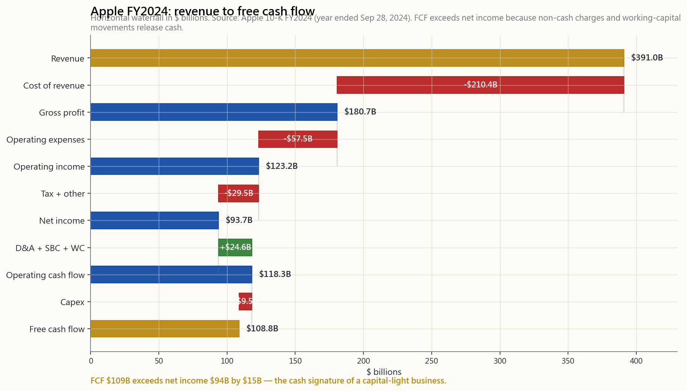
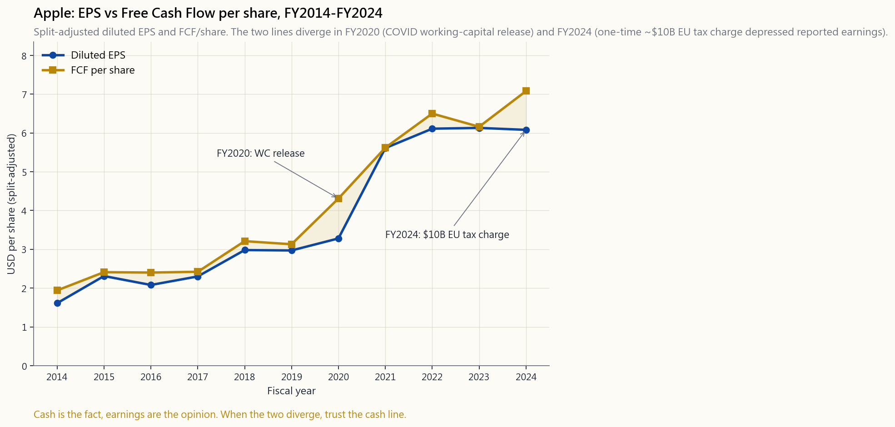

Week 8: Reading Financial Statements — IS, BS, CF for Investors
1. Why This Is Important
A public company speaks in three documents. The income statement, the balance sheet, and the cash flow statement. Everything else — the press release, the conference call, the analyst note, the stock price — is commentary on those three. If you cannot read the documents themselves, you are reading a translation of a translation, hoping the translator did not lie.
For an investor — not an accountant, not an auditor — the goal is narrow. You are not trying to recompute deferred tax liabilities. You are trying to answer four questions, in order, in under twenty minutes per company:
lives on the income statement, in the path from revenue down to operating income.
balance sheet — assets versus liabilities, working capital, the debt stack.
on the cash flow statement, in the gap between net income and operating cash flow. It is the only one of the three that is hard to fake.
flow does not, when earnings grow but receivables grow faster, when book equity grows but free cash flow does not — something is either wrong, or about to be.
The CFA curriculum spends roughly fifteen percent of Level I on financial statement analysis. We will spend one week on it, plus a side lesson on the 10-K filing wrapper (side02_10k_filing.md). The two together are enough to read most filings competently. They are not enough to audit one. That is fine. As Horace puts it: alpha sources include "look at cash, not earnings". You do not need to outwork the auditors to outperform the index. You need to know which line of which statement to land on first.
2. What You Need to Know
2.1 The Three Statements as One Story
The three statements are not three independent documents. They are three views of one underlying ledger, and they are mathematically linked.
- The income statement covers a period (a quarter or a year). It
- The balance sheet is a snapshot at a single date — usually the
- The cash flow statement also covers a period. It explains the
The three are linked by two bridges:
- Net income flows into retained earnings on the balance sheet.
- Operating cash flow starts from net income and adjusts. Add
The investor's discipline: read all three together, and trust the cash flow statement most when they disagree.
2.2 The Income Statement — Revenue Down to Net Income
The income statement is a waterfall. Revenue at the top, deductions at each step, net income at the bottom. Five waypoints matter.
Revenue. What customers actually paid (or owed) for goods and services delivered in the period. The single hardest line to fake across multiple years, because it is also the line that auditors tie back hardest to receipts and contracts.
Gross profit = Revenue − Cost of goods sold. Direct cost of producing what was sold. Gross margin (gross profit / revenue) tells you how much pricing power and unit economics the business has. A software company should print 70%+ gross margin; an airline, 10–20%. Compare within an industry, not across.
Operating income (EBIT) = Gross profit − Operating expenses. Subtract R&D, SG&A, depreciation, and amortisation. This is what the actual operations of the business earned, before the financial structure (interest) and the tax authority (taxes). Operating margin is the cleanest measure of business quality.
Pre-tax income = Operating income − Net interest. Add interest income, subtract interest expense, throw in any non-operating items (gains or losses on investments). This is where the *capital structure* shows up. A heavily-indebted company can have great operating margins and ugly pre-tax income.
Net income = Pre-tax income − Income taxes. The "bottom line." Divided by share count, you get earnings per share (EPS).
The image below walks Apple's FY2024 (year ending September 2024) income statement and cash flow as a single horizontal waterfall — revenue all the way to free cash flow.
![Apple FY2024 income-statement and cash-flow waterfall, $ billions. Bars from left to right: Revenue $391B, then negative bars peeling off Cost of revenue ($210B) leaving Gross profit $181B; subtract Operating expenses ($57B) to get Operating income $123B; subtract Income tax and other items to get Net income $94B; then add back Depreciation/amortisation, stock-based compensation, and working-capital release to land at Operating cash flow $118B; subtract Capex of $9B to land at Free cash flow $109B. The chart shows that Apple converts more cash than it reports as profit because non-cash charges and working capital favour cash.](image/week08_aapl_decomposition.png)
The most important visual takeaway is the gap between the rightmost two bars: net income $94B versus free cash flow $109B. Apple converted more cash than it booked as accounting profit. That is a hallmark of a healthy capital-light business. The opposite gap — net income materially above free cash flow, year after year — is the textbook accounting-quality warning sign.
2.3 The Balance Sheet — Assets, Liabilities, Equity
The balance sheet is governed by one identity:
$$ \text{Assets} = \text{Liabilities} + \text{Shareholders' Equity} $$
It always balances by construction. Bookkeeping is double-entry — every dollar of asset has a dollar of either a claim against it (liability) or ownership of it (equity). This is not deep economics; it is the structure of the ledger.
What matters for an investor is the composition of each side.
On the asset side, the order top-to-bottom is liquidity:
- Cash and equivalents. Sitting in a money-market fund or short
- Short-term investments and accounts receivable. Convertible
- Inventory. Goods waiting to be sold. The longer it sits, the
- Property, plant, and equipment (PP&E). Factories, machines,
- Goodwill and intangibles. What the company paid for
On the liability side, the order is when the bill is due:
- Accounts payable. Owed to suppliers, typically 30–60 days.
- Short-term debt and current portion of long-term debt. Coming
- Long-term debt. Bonds and term loans. The single most
- Pension and lease obligations. Often understated or
Shareholders' equity is the residual — assets minus liabilities. It is mostly composed of (1) common stock plus paid-in capital (what shareholders put in), (2) retained earnings (cumulative net income kept inside the business), and (3) treasury stock (the negative of buybacks). For a mature company that has been buying back stock for years, treasury stock can be enormous; companies like Boeing and Starbucks have negative shareholders' equity precisely because they have bought back more stock than they have retained. Negative book equity is not by itself a problem if the cash flow is healthy — it is just a note that the company has chosen buybacks over balance-sheet padding.
The two practitioner ratios you actually use:
- Current ratio = Current assets / Current liabilities. Above 1
- Net debt / EBITDA. Total debt minus cash, divided by trailing
2.4 The Cash Flow Statement — The One That's Hard to Fake
This is the statement that separates investors from speculators.
Net income is an opinion — a defensible one, signed by auditors, but built on dozens of estimates: depreciation lives, allowance for doubtful accounts, inventory write-downs, stock-based compensation, revenue-recognition timing. Cash flow is a fact. Either the bank balance went up, or it didn't.
The statement is built in three sections:
- Cash from operating activities (CFO or OCF). Starts at net
- Cash from investing (CFI). Capital expenditure (negative,
- Cash from financing (CFF). Debt raised or repaid, equity
The single most-used investor metric:
$$ \text{Free Cash Flow (FCF)} = \text{OCF} - \text{Capex} $$
Free cash flow is what the business could return to all capital providers without diminishing its operating capacity. It pays dividends, funds buybacks, retires debt, finances acquisitions. Persistent free cash flow is the only economic basis for any of those things. Companies that pay dividends or buy back stock without generating free cash flow are doing so by issuing debt or equity — borrowing from one set of investors to pay another, which is fine for a year and ruinous over a decade.
The discipline Horace pushes: when the gap between net income and free cash flow grows, distrust the income statement. Earnings can be manipulated; cash is harder. The chart below shows this exact gap for Apple over the last decade.
![Apple FY2014–FY2024 split-adjusted diluted EPS versus free cash flow per share (USD). Both lines rise from roughly $1.6–$1.9 in FY2014 to $6.1–$7.1 in FY2024. EPS and FCF per share track each other closely except in FY2020, where FCF per share ran ahead of EPS — the COVID year, when working capital released cash even as inventory and supply-chain disruption depressed reported earnings. The FY2024 gap also widens because a one-time roughly $10B EU State-aid tax charge depressed reported net income while leaving cash flow untouched.](image/week08_eps_vs_fcf.png)
In FY2020, EPS dropped relative to FCF because COVID-era working capital released cash (customers paid, inventory drew down) faster than accounting earnings were recognised. In FY2024, a one-time roughly $10B European Commission tax charge depressed reported net income without touching the actual cash collected from customers. Both years are clean illustrations of the same lesson: the cash is the fact; the earnings are the opinion.
2.5 Common-Size Statements — Reading Across Time and Companies
Raw dollar figures are hard to compare. Apple at $391B revenue and Coca-Cola at $46B revenue are not in the same league of size, but they may be in the same league of quality. **Common-size statements** rebase every line as a percentage of revenue (income statement) or total assets (balance sheet). That removes the size bias and makes the structure of the business visible.
A common-size income statement for FY2024 looks like this for our three example companies:
| Line | Apple | Coca-Cola | JPMorgan |
|---|---|---|---|
| Revenue | 100% | 100% | 100% |
| Gross profit | 46% | 60% | n/a |
| Operating income | 32% | 30% | 41% |
| Net income | 24% | 23% | 32% |
| Free cash flow / revenue | 28% | 21% | n/a |
Three very different businesses, three very different cost structures, but all three converting roughly a quarter of revenue into net profit — a sign that all three sit at the high-quality end of their respective sectors. Banks (JPMorgan) are excluded from the gross-profit and FCF rows because their income statement structure is fundamentally different (net interest income, provisions for credit losses, no real "cost of goods sold"). Banks need their own template, which we cover in Week 33.
The interactive panel below lets you switch between Apple, Coca-Cola, and JPMorgan, toggle between Revenue / Net Income / OCF / FCF, and see the ten-year history side by side with common-size ratios. The goal is to develop a visual sense for how different sectors look on the page, so you can flag anomalies on filings you have never seen before.
2.6 What an Investor Actually Reads, in What Order
A practical reading sequence for a new company, twenty minutes:
Look at the cash flow statement summary too — does cash track revenue?
power), flat (steady state), contracting (competition or cost pressure)?
When they diverge, in which direction and why? Persistent FCF below net income is the loudest single warning.
sustainable in a 5%-rate world? Refinancing wall in the next 18 months?
vs reinvestment vs M&A. Funded from FCF or from new debt?
The 10-K side lesson (side02_10k_filing.md) covers where in the document to find each of these — Item 7 (MD&A), Item 8 (statements), Item 1A (risk factors), notes to the financial statements. The combination of what to read (this lesson) and where in the filing it lives (the side lesson) is enough to put you in the top decile of retail investors by financial literacy. That is a low bar but a real one.
3. Common Misconceptions
Misconception 1: "Earnings are the most important number."
Earnings are an opinion produced by accounting choices. Free cash flow is a fact. When they agree, the business is genuinely profitable. When they disagree persistently, the cash flow is right and the earnings are wrong, almost without exception.
Misconception 2: "A profitable company cannot go bankrupt."
Profitable companies go bankrupt all the time — when they cannot service their debt. Profit is on the income statement; cash to pay bondholders is on the cash flow statement. Many of the most famous bankruptcies (Toys "R" Us, Hertz at the LBO peak) happened to companies that were "profitable" right up until the refinancing window slammed shut.
**Misconception 3: "Negative book equity means the company is insolvent."**
Not in the modern era. Mature buyback-heavy companies (Boeing, Starbucks, McDonald's at points) have negative book equity simply because they have repurchased more stock than they have retained. Solvency is determined by the ability to service obligations from cash flow, not by the sign of the book-equity line.
Misconception 4: "Big depreciation charges are bad."
Depreciation is a non-cash charge. It reduces accounting profit but does not reduce cash. A capital-intensive business (utility, railroad, refinery) will always have high depreciation; it compresses earnings but not cash flow. The right comparison is capex versus depreciation: capex above depreciation means the business is growing or replacing aging assets; capex well below depreciation means the company is harvesting (running down its asset base for cash). Either can be right depending on the strategy.
Misconception 5: "Stock-based compensation is not a real cost."
It is. Companies (especially in tech) like to present "adjusted EPS" with SBC added back, framing it as non-cash. It is non-cash in the period, but it dilutes existing shareholders and very much costs them economically. Treat SBC as a real cost. Adjusted EBITDA that excludes SBC is one of the few numbers in finance that is nearly always misleading.
Misconception 6: "Goodwill represents real value."
Goodwill is a plug — the residual of acquisition price over the target's identifiable net assets. It is not depreciated; it is tested for impairment annually. Many companies' goodwill quietly balloons through acquisitions and then suddenly collapses in a single quarter when the deal does not work. Treat the goodwill line with extreme skepticism, especially for serial acquirers.
Misconception 7: "If the auditor signed it, it's accurate."
Auditors test for material misstatement, not truth. The Big Four sign-off on Enron, Wirecard, and Lehman are the standing reminders that audit assurance is far weaker than retail investors imagine. The audit is a backstop, not a guarantee.
**Misconception 8: "All companies in the same sector should look similar."**
The sector frames the structure, not the quality. Two software companies can both have 70% gross margins, but if one has 30% operating margin and the other 5%, they are not in the same business in any meaningful sense. Common-size analysis is most useful precisely because it highlights these dispersions within a sector.
4. Q&A
Q1: I have never read a 10-K. Where do I start?
A: Open Apple's most recent 10-K on EDGAR. Read Item 7 (MD&A) end to end — it is management explaining the year in their own words. Then jump to Item 8 and look at the three statements. Spend ten minutes on each. Then read the first three risk factors in Item 1A. That is a working forty-minute first pass. The side lesson on the 10-K filing structure (side02_10k_filing.md) walks the document section by section.
Q2: What is the single most informative ratio?
A: There is no single one. If you held a gun to my head, **free cash flow / revenue** for non-financial businesses. It captures the ability to convert sales into spendable cash, which subsumes gross margin, working-capital efficiency, and capital intensity in one number. Above 15% is high-quality; above 20% is exceptional. For banks, return on tangible common equity (ROTCE) is the analogous one-number summary.
Q3: Why do GAAP earnings and "adjusted earnings" disagree?
A: Companies present non-GAAP adjusted figures to highlight what they argue is the recurring economic earnings power, excluding one-time items, M&A-related amortisation, restructuring charges, and (often) stock-based compensation. Some adjustments are honest (genuine one-time charges); some are not (recurring SBC dressed up as non-recurring). Read both. Distrust the gap. SEC Regulation G requires reconciliation of any non-GAAP figure to its GAAP equivalent — the reconciliation is where the truth lives.
Q4: How do I read a bank's financial statements?
A: Banks are different. Their "revenue" is net interest income plus non-interest income, not "revenue minus COGS." Their key lines are net interest margin, provision for credit losses, the efficiency ratio (non-interest expense / revenue), and ROTCE. Their balance sheet is dominated by loans (asset) and deposits (liability). We cover this in Week 33; the framework is genuinely distinct.
Q5: What is "earnings management" and how do I spot it?
A: Smoothing reported earnings via legal but discretionary accounting choices — accelerating revenue recognition into a soft quarter, deferring expenses, building or releasing reserves. Spot it by comparing operating cash flow to net income year over year. Persistent operating cash flow below net income, with growing receivables or growing inventory, is the classic combination. Beneish's M-Score and Sloan's accruals ratio are formal tools investors use; for a casual reader, the OCF-to-NI gap is enough.
Q6: What about non-US companies — same statements?
A: Mostly. Outside the US, companies file under IFRS (International Financial Reporting Standards) rather than US GAAP. The structure of the three statements is the same; the line-item conventions differ in places (LIFO inventory not allowed, capitalised R&D allowed, lease accounting differs). This course restricts the investable universe to US-listed equities — but many of those (ADRs, foreign-domiciled US-listed companies) file under IFRS via 20-F. The three-statement framework still applies.
Q7: How often should I re-read a company's statements?
A: Quarterly, lightly. Annually, deeply. The 10-K (annual) is the document that matters. The 10-Qs (quarterly) are progress reports; read the MD&A and skim the statements to make sure nothing is breaking. Re-read the full 10-K every year for any position you hold longer than twelve months.
**Q8: Should I trust company-reported metrics that aren't on the financial statements? (e.g., monthly active users, ARR, "core EPS")**
A: With calibration. Operating metrics outside GAAP can be useful forward indicators but are unaudited and definitionally elastic. Compare year over year and against the company's own definition in prior periods (companies sometimes redefine MAUs or ARR to flatter trends). Cross-check against the audited cash flow. Persistent ARR growth that does not show up as cash collected is a story; cash collected with declining ARR is a real warning.
Q9: How does this connect to valuation?
A: Every valuation method we cover from Week 21 onward uses these three statements as inputs. P/E uses net income. P/B uses shareholders' equity. EV/EBITDA uses operating income plus depreciation. DCF uses free cash flow projections. You cannot pressure-test any valuation if you cannot rebuild the inputs from the statements. That is why this lesson sits where it does in the sequence — before any of the valuation work.
Q10: Will I have to do this forever, or do tools automate it?
A: Tools (StockAnalysis, Macrotrends, Tikr) display the headline numbers. They do not read the notes, do not catch the SBC games, do not flag the goodwill build-ups. The screen-and-skim layer is automated; the reading layer is not, and probably will not be. The portfolio-level edge is still in *which lines you look at and in what order*, which is what this lesson teaches.
第八週：解讀財務報表——投資者的損益表、資產負債表與現金流量表
1. 為何此事至關重要
上市公司以三份文件發聲：損益表、資產負債表，以及現金流量表。其他一切——新聞稿、業績發布會、分析師報告、股票價格——皆是對這三份文件的詮釋。若你無法親自閱讀原文，你所讀到的不過是二手翻譯，而你只能寄望那位翻譯者未有說謊。
對於投資者而言——而非會計師，更非審計師——目標其實相當狹窄。你無需重新計算遞延稅項負債，你只需回答以下四個問題，依序而答，每間公司不超過二十分鐘：
特許金融分析師課程在第一級別中，約花費百分之十五的篇幅講授財務報表分析。我們將用一週時間加以涵蓋，並附帶一節關於10-K申報文件框架的延伸課程（side02_10k_filing.md）。兩者合併，已足以讓你勝任閱讀大多數申報文件的工作，但尚不足以對其進行審計——而這完全沒有問題。正如陳馬所言：阿爾法的來源包括「看現金，而非盈利」。你無需比審計師更努力，才能跑贏指數。你只需知道該先看哪份報表的哪一行。
2. 你需要掌握的知識
2.1 三份報表合為一個故事
三份報表並非三份獨立文件。它們是同一份基礎賬簿的三個視角，且在數學上相互連結。
- 損益表涵蓋一段時期（一個季度或一個財政年度）。它從收入出發，逐步向下推算至淨收入。時間窗口視角：流量。
- 資產負債表是某一特定日期的快照——通常是該時期的最後一天。資產等於負債加上股本。時間節點視角：存量。
- 現金流量表亦涵蓋一段時期。它解釋資產負債表上現金變動的緣由，分為三個部分：來自營運的現金（OCF）、用於投資的現金（CFI），以及來自融資的現金（CFF）。
- 淨收入流入資產負債表的保留盈利。 上一年度的股本，加上淨收入，減去股息，即得本年度股本——在股份回購及其他調整項目之前。
- 營運現金流從淨收入出發並加以調整。 加回非現金支出（折舊、以股代薪），再就營運資金變動（應收款項、應付款項、存貨）進行調整。扣除資本開支後所餘的金額，即為自由現金流——這個數字用於支付股息、償還債務，以及支持股份回購。
2.2 損益表——從收入到淨收入
損益表是一道瀑布。頂端是收入，每一步扣除項目，底部是淨收入。有五個關鍵節點需要留意。
收入。 客戶就期內已交付商品及服務，實際支付（或應付）的款項。在多個年度中，這是最難造假的一行，因為審計師對此行與收款記錄及合約的核對也最為嚴格。
毛利 = 收入 − 銷貨成本。 生產已售出商品的直接成本。毛利率（毛利 / 收入）反映業務的定價能力及單位經濟效益。軟件公司的毛利率應達70%以上；航空公司則在10至20%之間。請在同一行業內比較，而非跨行業。
營業收入（EBIT）= 毛利 − 營業費用。 扣除研發費用、一般及行政費用、折舊及攤銷。這是業務實際營運所賺取的收益，在財務結構（利息）及稅務當局（稅款）介入之前。營業利潤率是衡量業務質素最清晰的指標。
稅前收入 = 營業收入 − 淨利息支出。 加上利息收入，扣除利息支出，再計入任何非營業項目（投資的收益或虧損）。這是資本結構浮現之處。一家負債纍纍的公司，可能擁有出色的營業利潤率，卻有不堪入目的稅前收入。
淨收入 = 稅前收入 − 所得稅。 即「底線」。除以股份數量，即得每股盈利（EPS）。
下圖以單一水平瀑布圖呈現蘋果公司2024財政年度（截至2024年9月）的損益表及現金流——從收入一路延伸至自由現金流。

此圖最重要的視覺啟示，在於最右兩柱之間的差距：淨收入940億美元對比自由現金流1,090億美元。蘋果轉化的現金多於其賬面會計盈利。這是健康輕資產業務的標誌。相反的情況——淨收入長年大幅高於自由現金流——是會計質素出現警示的教科書式信號。
2.3 資產負債表——資產、負債、股本
資產負債表受制於一個恆等式：
$$ \text{資產} = \text{負債} + \text{股東股本} $$
此式永遠成立，因為複式記賬法下，每一元資產，背後必有一元負債（對其的索償）或一元股本（對其的所有權）。這不是深奧的經濟學，只是賬簿的結構。
對投資者而言，重要的是各方的構成。
資產一方，由上至下按流動性排列：
- 現金及等價物。 存放於貨幣市場基金或短期國債。即日可動用。
- 短期投資及應收款項。 可在一年內變現——但應收款項可能出現壞賬。
- 存貨。 待售商品。存放愈久，愈陳舊，折扣空間也愈大。
- 物業、廠房及設備（PP&E）。 廠房、機器、數據中心。壽命長。按歷史成本減去累計折舊入賬，此值可能大幅低估重置價值（試想一座百年煉油廠）。
- 商譽及無形資產。 公司就收購目標所支付的超出其賬面資產淨值的溢價，加上內部持有的品牌或專利價值。這一行在收購失敗時會遭到減值（即撇賬）。
- 應付賬款。 應付供應商的款項，通常30至60天內到期。
- 短期債務及長期債務的一年內到期部分。 一年內須償還。乃典型的償債壓力來源。
- 長期債務。 債券及定期貸款。理解資本結構最重要的一項負債。
- 退休金及租賃負債。 過往常低估或列於資產負債表以外；現行準則下大多已予反映，但仍值得核查。
實務中實際使用的兩個比率：
- 流動比率 = 流動資產 / 流動負債。 高於1通常屬健康水平；低於1意味公司依賴再融資、存貨周轉或循環信貸以應付近期負債。
- 淨債務 / 息稅折舊攤銷前盈利。 總債務減去現金，除以過去十二個月的息稅折舊攤銷前盈利。低於2倍屬保守；3至4倍對許多行業屬正常；高於5倍已屬槓桿收購水平，若遇上經濟衰退或利率急升，狀況便會顯得脆弱。
2.4 現金流量表——最難造假的一份
這份報表將投資者與投機者區分開來。
淨收入是一個意見——有審計師簽署背書，當然具合理性，但它建立在數十個估算之上：折舊年期、壞賬撥備、存貨撇賬、以股代薪、收入確認時間。每一項估算都有其合理依據，同時也是一個可調節的旋鈕。現金流則是一個事實：銀行賬戶結餘是否上升，白紙黑字，容不得半點含糊。
現金流量表分為三個部分：
- 來自營運活動的現金（CFO或OCF）。 從淨收入出發，加回非現金項目（折舊、攤銷、以股代薪），再就營運資金變動進行調整（應收款項增加 = 現金流出；應付賬款增加 = 現金流入；存貨增加 = 現金流出）。最終結果：業務實際產生的現金。
- 來自投資活動的現金（CFI）。 資本開支（負數，再投資於業務）、收購（負數）、資產出售所得（正數），以及有價證券組合的變動。
- 來自融資活動的現金（CFF）。 債務融資或償還、股份發行或回購、已付股息。
$$ \text{自由現金流（FCF）} = \text{營運現金流（OCF）} - \text{資本開支} $$
自由現金流是業務在不損害其營運能力的前提下，可以分配給所有資本提供者的金額。它用於支付股息、進行股份回購、償還債務、資助收購。持續穩定的自由現金流，是所有這些行動唯一正當的經濟基礎。若公司在未能產生自由現金流的情況下仍支付股息或進行股份回購，其資金來源必定是發行債務或股份——即向一批投資者借款，支付給另一批，短期或可維持，長遠則後患無窮。
陳馬所強調的紀律：當淨收入與自由現金流之間的差距擴大，就應對損益表保持懷疑。盈利可以被操縱；現金更難。下圖展示蘋果公司過去十年這一差距的演變。

2020財年，每股盈利相對每股自由現金流出現下滑，原因是疫情期間的營運資金釋放了現金（客戶付款，存貨消耗），速度快於會計盈利的確認。2024財年，歐盟委員會一次性約100億美元的稅務指令，壓低了所報告的淨收入，卻未觸及向客戶實際收取的現金。兩個年份清晰地印證了同一教訓：現金是事實；盈利是意見。
2.5 共同比報表——跨時期與跨公司比較
原始的美元數字難以直接比較。蘋果公司收入3,910億美元，可口可樂460億美元，兩者規模相差懸殊，但在質素上或許旗鼓相當。共同比報表將每一行重新基準化，表示為佔收入的百分比（損益表）或佔總資產的百分比（資產負債表）。這消除了規模偏差，使業務的結構得以清晰呈現。
以下是我們三家示例公司2024財年的共同比損益表：
| 項目 | 蘋果 | 可口可樂 | 摩根大通 |
|---|---|---|---|
| 收入 | 100% | 100% | 100% |
| 毛利 | 46% | 60% | 不適用 |
| 營業收入 | 32% | 30% | 41% |
| 淨收入 | 24% | 23% | 32% |
| 自由現金流 / 收入 | 28% | 21% | 不適用 |
三家業務截然不同，成本結構各異，但三者皆將約四分之一的收入轉化為淨盈利——這說明三者在各自行業中均處於高質素的一端。銀行（摩根大通）的毛利及自由現金流行不適用，因為其損益表結構根本上有所不同（淨利息收入、信用損失撥備、沒有真正的「銷貨成本」）。銀行需要其專屬的分析框架，我們將於第33週加以介紹。
以下互動面板讓你可以在蘋果、可口可樂及摩根大通之間切換，選取收入、淨收入、營運現金流或自由現金流，並將十年歷史數據與共同比比率並排呈現。目標是培養對不同行業在報表上呈現方式的直觀感受，以便你在面對從未見過的申報文件時，能夠識別異常之處。
2.6 投資者的實際閱讀順序
針對一間新公司的實際閱讀流程，二十分鐘：
10-K延伸課程（side02_10k_filing.md）涵蓋如何在文件中找到每項數據——第7項（管理層討論及分析）、第8項（財務報表）、第1A項（風險因素）、財務報表附注。結合「讀什麼」（本課）與「在文件的哪裡找到它」（延伸課程），足以讓你躋身零售投資者財務素養的頂尖十分位。這是一個門檻不高但確實存在的標準。
3. 常見誤解
誤解一：「盈利是最重要的數字。」
盈利是由會計選擇所產生的意見。自由現金流是事實。兩者吻合時，業務確實盈利。若長期出現分歧，幾乎沒有例外——現金流是對的，盈利是錯的。
誤解二：「有盈利的公司不可能破產。」
有盈利的公司經常破產——當它們無法履行債務利息時。盈利在損益表上；償付債券持有人的現金在現金流量表上。許多著名破產案例（玩具反斗城、Hertz在槓桿收購頂峰時），涉及的公司一直到再融資窗口關閉前，都被視為「盈利」企業。
誤解三：「負賬面股本意味公司資不抵債。」
在當代並非如此。成熟的大規模股份回購企業（波音、星巴克、麥當勞在某些時期），出現負賬面股本，純粹是因為回購金額超過保留盈利。償債能力取決於能否從現金流中履行負債，而非賬面股本的正負。
誤解四：「大額折舊支出是壞事。」
折舊是非現金支出。它降低會計盈利，但不減少現金。資本密集型業務（公用事業、鐵路、煉油廠）的折舊必然偏高，壓縮盈利但不影響現金流。正確的比較是資本開支對比折舊：資本開支高於折舊，代表業務正在增長或更新資產；資本開支遠低於折舊，代表公司正在「收割」（消耗資產基礎以換取現金）。兩者皆可合理，視乎策略而定。
誤解五：「以股代薪不是真實成本。」
確實是。科技公司（尤其如此）喜歡呈報「調整後每股盈利」，將以股代薪加回，以「非現金」為由略去不計。以股代薪在當期確為非現金，但它攤薄現有股東的權益，在經濟上確實構成代價。應將以股代薪視為真實成本。排除以股代薪的調整後息稅折舊攤銷前盈利，是金融界少數幾乎永遠具誤導性的數字之一。
誤解六：「商譽代表真實價值。」
商譽是一個補差項——收購價格超出目標公司可識別資產淨值的差額。它不作折舊，每年接受減值測試。許多公司的商譽在連串收購中悄然膨脹，然後在某一季度因交易失敗而驟然崩潰。對商譽一行應保持極度審慎，尤其對於連環收購企業。
誤解七：「審計師簽署了，數字就準確。」
審計師測試的是重大失實陳述，而非真相。安然、Wirecard及雷曼兄弟的四大會計師事務所簽署記錄，是審計保證遠比零售投資者想象中薄弱的長久佐證。審計是最後防線，不是保證。
誤解八：「同一行業的所有公司財務報表應大同小異。」
行業框定的是結構，而非質素。兩家軟件公司可能同樣擁有70%毛利率，但若一家營業利潤率30%，另一家僅5%，兩者在任何實質意義上都不是同一盤生意。共同比分析最大的用處，正是在於揭示行業內部這些差異。
4. 問答環節
問題一：我從未讀過10-K。從何入手？
答：打開蘋果公司在EDGAR上的最新10-K文件。從頭到尾閱讀第7項（管理層討論及分析）——這是管理層以自己的語言解釋年度業績的部分。然後跳到第8項，瀏覽三份報表，每份花十分鐘。接著閱讀第1A項的首三個風險因素。這是一個實用的四十分鐘初步閱讀方案。關於10-K申報文件結構的延伸課程（side02_10k_filing.md）將逐節說明文件各部分。
問題二：最具參考價值的單一比率是什麼？
答：沒有單一最佳比率。若非要選一個，對非金融業務而言，是自由現金流 / 收入。它綜合反映業務將銷售額轉化為可動用現金的能力，在一個數字中涵蓋了毛利率、營運資金效率及資本密集度。高於15%屬高質素；高於20%則屬卓越。對於銀行，有形普通股本回報率（ROTCE）是相對應的單一綜合指標。
問題三：為何GAAP盈利與「調整後盈利」存在差異？
答：公司呈報非GAAP調整後數字，是為了突顯其認為具持續性的盈利能力，剔除一次性項目、與收購相關的攤銷、重組費用，以及（通常）以股代薪。部分調整是誠實的（確屬一次性的費用）；部分則不然（將反覆出現的以股代薪包裝成非經常性項目）。兩個數字都要閱讀，對差距保持懷疑。美國證監會G規定要求就任何非GAAP數字與其GAAP對應數字進行調節——真相往往藏在調節表之中。
問題四：如何閱讀銀行的財務報表？
答：銀行有所不同。其「收入」是淨利息收入加上非利息收入，而非「收入減銷貨成本」的概念。關鍵指標包括淨利息息差、信用損失撥備、效率比率（非利息支出 / 收入），以及有形普通股本回報率。其資產負債表以貸款（資產方）及存款（負債方）為主。我們將在第33週加以介紹；其分析框架確實有所不同。
問題五：何謂「盈利管理」，如何識別？
答：透過合法但具酌情性的會計選擇，對所報告盈利進行平滑處理——將收入確認提前至業績疲弱的季度、推遲費用入賬、建立或釋放撥備。識別方法：逐年比較營運現金流與淨收入。若營運現金流長期低於淨收入，同時應收款項及存貨不斷增加，便是典型的組合警示信號。Beneish的M-Score及Sloan的應計項目比率是投資者所使用的正式工具；對於一般讀者，營運現金流與淨收入之間的差距已足夠說明問題。
問題六：非美國公司的財務報表格式相同嗎？
答：大致相同。在美國以外，公司按照《國際財務報告準則》（IFRS）而非美國《公認會計原則》（US GAAP）申報。三份報表的結構相同，但個別行目的慣例有所不同（不允許使用後進先出法核算存貨、允許資本化研發費用、租賃會計處理有別）。本課程將可投資範疇限定於在美國上市的股票——但其中許多（美國預託證券、在美上市的外國注冊公司）是透過20-F按IFRS申報的。三份報表的分析框架仍然適用。
問題七：應多久重新閱讀一次公司的財務報表？
答：每季簡閱，每年深讀。10-K（年報）才是真正重要的文件。10-Q（季報）是進度報告，閱讀管理層討論及分析並快速瀏覽報表，確保沒有任何異常出現即可。對於持有超過十二個月的倉位，每年重新完整閱讀一次10-K。
問題八：應否相信財務報表以外的公司自報指標（如月活躍用戶、年度重覆收入「ARR」、「核心每股盈利」）？
答：需加以甄別。GAAP以外的業務指標可作為有用的前瞻指標，但未經審計，定義亦具彈性。應逐年比較，並對照公司在過往時期的自身定義（公司有時會重新定義月活躍用戶或年度重覆收入以美化趨勢）。同時與已審計的現金流進行交叉核對。年度重覆收入持續增長卻未反映於實際收款，只是一個故事；實際收款下降而年度重覆收入亦告下滑，才是真正的警示。
問題九：這與估值有何關聯？
答：我們從第21週起介紹的每一種估值方法，都以這三份報表作為輸入數據。市盈率使用淨收入；市賬率使用股東股本；企業價值 / 息稅折舊攤銷前盈利使用營業收入加折舊；現金流折現法使用自由現金流預測。若你無法從報表中重建輸入數據，便無從對任何估值進行壓力測試。這正是本課置於當前序列位置的原因——在所有估值工作之前。
問題十：我是否需要永遠親自做這件事，還是工具可以自動化？
答：工具（StockAnalysis、Macrotrends、Tikr）可顯示主要數字，但它們不會閱讀附注，不會發現以股代薪的把戲，也不會標記商譽的持續膨脹。篩選與瀏覽的層面已可自動化；閱讀的層面無法，且短期內大概不會。在投資組合層面，優勢仍在於看哪幾行、以何種順序看——而這正是本課所教授的內容。
第八週：解讀財務報表——投資人必看的損益表、資產負債表與現金流量表
1. 為何這件事至關重要
一家上市公司透過三份文件發聲：損益表、資產負債表，以及現金流量表。其餘的一切——新聞稿、法說會、分析師報告、股價——都不過是對這三份文件的詮釋。如果你無法自行閱讀原始文件，你讀到的只是翻譯的翻譯，並且只能祈禱譯者沒有說謊。
對一位投資人而言——不是會計師，不是審計員——目標十分明確。你不需要重新計算遞延所得稅負債。你需要回答四個問題，依序作答，每家公司不超過二十分鐘：
CFA課程在第一級考試中，約有百分之十五的內容涉及財務報表分析。我們將在一週內完成，並搭配一堂關於10-K年報架構的補充課（side02_10k_filing.md）。兩者合計，足以讓你有能力閱讀大多數的財報申報。但這還不足以讓你進行審計——這沒關係。如陳馬所言：超額報酬的來源之一就是「看現金，不看盈餘」。你不需要比審計員更勤奮，才能跑贏指數。你只需要知道哪份報表的哪一行最值得優先關注。
2. 你需要掌握的知識
2.1 三份報表構成一個完整故事
三份報表並非三份獨立文件。它們是同一份底層帳簿的三種觀點，在數學上相互連結。
- 損益表涵蓋某一期間（一季或一年）。從營收開始，逐步向下推算至淨利。屬於時間區間的觀點：流量。
- 資產負債表是某一特定日期的快照——通常是期末最後一天。資產等於負債加股東權益。屬於時間點的觀點：存量。
- 現金流量表同樣涵蓋某一期間。它解釋資產負債表上現金變動的原因，分為三個部分：營業活動現金流（OCF）、投資活動現金流（CFI），以及籌資活動現金流（CFF）。
- 淨利流入資產負債表上的保留盈餘。 上年度股東權益加上淨利，再減去股利，等於本年度股東權益（庫藏股回購及其他調整項目除外）。
- 營業活動現金流從淨利出發並進行調整。 加回非現金費用（折舊、股票薪酬），再調整營運資金變動（應收帳款、應付帳款、存貨）。扣除資本支出後的餘額即為自由現金流，這個數字用於支付股利、償還債務，以及進行庫藏股回購。
2.2 損益表——從營收到淨利
損益表是一道瀑布。頂端是營收，每一步驟扣除相關費用，底端是淨利。有五個重要關卡。
營收。 客戶在本期實際支付（或應付）的商品與服務金額。這是最難在多年間造假的一行，因為這也是審計員最嚴格核對收款憑證與合約的一行。
毛利 = 營收 − 銷貨成本。 生產已銷售商品的直接成本。毛利率（毛利÷營收）反映企業的定價能力與單位經濟效益。軟體公司的毛利率應達70%以上；航空公司則在10%至20%之間。比較應在同產業內進行，而非跨產業。
營業利益（EBIT）= 毛利 − 營業費用。 扣除研發費用、銷售管理及一般費用、折舊與攤銷。這是企業實際營運本身所賺取的利益，尚未計入資本結構（利息）與稅負（稅金）的影響。營業利益率是衡量企業品質最純粹的指標。
稅前利益 = 營業利益 − 淨利息支出。 加計利息收入，扣除利息費用，並納入任何非營業項目（投資損益）。這是資本結構呈現的地方。一家高度負債的企業可能擁有優異的營業利益率，但稅前利益卻相當難看。
淨利 = 稅前利益 − 所得稅。 所謂的「底線」。除以股數，即得每股盈餘（EPS）。
下圖以單一橫向瀑布圖呈現蘋果2024財年（截至2024年9月）的損益表與現金流——從營收一路延伸至自由現金流。
最重要的視覺重點是最右側兩根長條之間的差距：淨利940億美元對比自由現金流1,090億美元。蘋果所轉換的現金多於其帳上的會計獲利。這是一家優質輕資產企業的標誌。相反的情況——淨利長期大幅高於自由現金流——正是會計品質警訊的教科書範例。
2.3 資產負債表——資產、負債與股東權益
資產負債表由一個恆等式主導：
$$ \text{資產} = \text{負債} + \text{股東權益} $$
它在結構上必然平衡。複式記帳的每一元資產，都對應著一元的對外請求權（負債）或所有權（股東權益）。這不是深奧的經濟學原理，而是帳簿的結構。
對投資人而言，重要的是各方的組成內容。
在資產那一側，由上而下依流動性排列：
- 現金及約當現金。 存放於貨幣市場基金或短期國庫券。今日即可動用。
- 短期投資與應收帳款。 可在一年內轉換為現金——但應收帳款可能變成呆帳。
- 存貨。 等待銷售的商品。存放愈久，愈易陳腐且需打折。
- 不動產、廠房及設備（PP&E）。 工廠、機器設備、資料中心。使用年限長。按歷史成本減累計折舊列報，可能嚴重低估重置成本（試想一座有百年歷史的煉油廠）。
- 商譽與無形資產。 企業在收購時高於目標公司可辨認帳面淨資產的溢價，以及內部持有的品牌或專利價值。當一樁收購證明是失敗的，這一行就會發生減損（沖銷）。
- 應付帳款。 應付給供應商的款項，通常為30至60天。
- 短期借款及一年內到期之長期負債。 一年內即到期。這是典型的償債壓力來源。
- 長期債務。 公司債與定期貸款。理解資本結構最重要的負債項目。
- 退休金與租賃負債。 在過去的會計準則下常被低估或列為表外項目；現行準則下大多已納入，但仍值得查核。
你實際會用到的兩個實務比率：
- 流動比率 = 流動資產 ÷ 流動負債。 高於1通常表示健康；低於1意味著企業需依賴再融資、存貨周轉或循環信用額度來應付近期義務。
- 淨負債 ÷ 稅息折舊攤銷前獲利（EBITDA）。 總債務減現金，除以過去十二個月的稅息折舊攤銷前獲利。低於2倍屬保守；3至4倍對許多產業而言屬正常；超過5倍則進入槓桿收購領域，在經濟衰退或利率驟升的情況下開始顯得脆弱。
2.4 現金流量表——最難造假的那一份
這是區分投資人與投機者的報表。
淨利是一種意見——經審計師認可、具有合理根據，但建立在數十項估計之上：折舊年限、呆帳備抵、存貨跌價損失、股票薪酬、收入認列時點。每一項都站得住腳，每一項也都是可調整的旋鈕。現金流則是事實。銀行帳戶餘額增加了，或者沒有。
現金流量表分為三個部分：
- 營業活動現金流（CFO或OCF）。 從淨利出發，加回非現金項目（折舊、攤銷、股票薪酬），並調整營運資金變動（應收帳款增加＝現金流出；應付帳款增加＝現金流入；存貨增加＝現金流出）。最終結果：企業營運實際產生的現金。
- 投資活動現金流（CFI）。 資本支出（負值，再投入企業）、收購（負值）、資產出售收益（正值），以及有價證券投資組合的變動。
- 籌資活動現金流（CFF）。 借款或還款、增資或庫藏股回購、支付股利。
$$ \text{自由現金流（FCF）} = \text{營業活動現金流（OCF）} - \text{資本支出（Capex）} $$
自由現金流是企業在不損害營運能力的前提下，可以返還給所有資本提供者的金額。它用於支付股利、進行庫藏股回購、償還債務、資助收購。持續穩定的自由現金流，是上述任何行動的唯一經濟基礎。沒有自由現金流卻支付股利或進行庫藏股回購的企業，是靠發行債務或增資來做這些事——以一批投資人的錢支付另一批投資人，短期內無妨，長達十年則後果堪憂。
陳馬強調的紀律：當淨利與自由現金流之間的落差擴大，就應質疑損益表。盈餘可以被操弄；現金更難。下圖呈現了蘋果過去十年這一落差的變化。
2020財年，每股盈餘相對每股自由現金流下降，是因為疫情期間的營運資金（客戶付款、存貨去化）比會計盈餘認列更快地釋放了現金。2024財年，一次性約100億美元的歐洲委員會稅務裁定壓低了帳上淨利，但未影響向客戶實際收到的現金。兩年都清楚示範了同一個道理：現金是事實；盈餘是意見。
2.5 共同比報表——跨時間與跨公司比較
原始金額數字難以直接比較。蘋果3,910億美元的營收與可口可樂460億美元的營收，在規模上完全不是同一個量級，但在品質上或許旗鼓相當。共同比報表將每一行數字換算為營收的百分比（損益表）或總資產的百分比（資產負債表）。這消除了規模偏差，使企業的結構一目了然。
以下是三家示範公司2024財年的共同比損益表：
| 項目 | 蘋果 | 可口可樂 | 摩根大通 |
|---|---|---|---|
| 營收 | 100% | 100% | 100% |
| 毛利 | 46% | 60% | 不適用 |
| 營業利益 | 32% | 30% | 41% |
| 淨利 | 24% | 23% | 32% |
| 自由現金流 ÷ 營收 | 28% | 21% | 不適用 |
三家截然不同的企業，三種截然不同的成本結構，但三者都將約四分之一的營收轉換為淨利——這顯示三者都處於各自產業中的高品質端。摩根大通（銀行業）被排除在毛利與自由現金流那幾行之外，因為銀行的損益表結構根本不同（淨利息收入、信用損失準備，沒有真正意義上的「銷貨成本」）。銀行需要自己的分析框架，我們將在第三十三週介紹。
下方的互動面板可讓你在蘋果、可口可樂與摩根大通之間切換，切換指標——營收、淨利、營業活動現金流、自由現金流——並以共同比比率並排呈現十年歷史資料。目標是培養你對不同產業在報表上呈現方式的直覺感受，讓你在看到從未見過的財報時，能夠迅速察覺異常。
2.6 投資人實際閱讀財報的順序
針對一家新公司的實務閱讀順序，二十分鐘：
10-K年報補充課（side02_10k_filing.md）將介紹上述每項資訊在文件中的具體位置——第7項（管理層討論與分析）、第8項（財務報表）、第1A項（風險因素）、財務報表附註。應讀什麼（本課）加上在申報文件的哪個位置（補充課），足以讓你在一般散戶投資人中躋身財務素養的前十個百分位。這是一個低門檻，但確實存在的門檻。
3. 常見迷思
迷思一：「盈餘是最重要的數字。」
盈餘是會計選擇所產生的意見。自由現金流才是事實。當兩者相符，企業就是真正有獲利能力的。當兩者長期背離，幾乎毫無例外地，現金流是對的，而盈餘是錯的。
迷思二：「有獲利的公司不可能破產。」
有獲利的公司時常破產——當他們無法償付債務時。獲利在損益表上；用來支付債券持有人的現金在現金流量表上。許多最著名的破產案例（玩具反斗城、槓桿收購高峰期的赫茲）都發生在「有獲利」的公司身上，直到再融資視窗驟然關閉的那一刻。
迷思三：「負帳面股東權益意味著公司資不抵債。」
在現代企業中並非如此。大量進行庫藏股回購的成熟企業（波音、星巴克、麥當勞在某些時期）之所以帳面股東權益為負，純粹是因為回購股份的金額超過了保留盈餘。償債能力取決於能否以現金流支應義務，而不取決於帳面股東權益的正負。
迷思四：「高額折舊費用是壞事。」
折舊是非現金費用。它降低會計獲利，但不影響現金。資本密集型企業（公用事業、鐵路、煉油廠）的折舊必然偏高，這會壓縮盈餘，但不會壓縮現金流。正確的比較是資本支出與折舊的對比：資本支出高於折舊，代表企業在成長或更新老化資產；資本支出遠低於折舊，代表企業在「收割」（消耗資產基礎以換取現金）。視企業策略而定，兩者都可能是正確的選擇。
迷思五：「股票薪酬不是真實成本。」
它是真實成本。企業（尤其是科技業）喜歡呈現將股票薪酬加回的「調整後每股盈餘」，將其定義為非現金項目。它確實在當期是非現金的，但它稀釋了現有股東的持股，對股東而言有真實的經濟成本。請將股票薪酬視為真實成本。剔除股票薪酬的調整後稅息折舊攤銷前獲利，是金融領域中幾乎永遠具有誤導性的數字之一。
迷思六：「商譽代表真實價值。」
商譽是一個軋差項——收購價格高於目標公司可辨認淨資產的差額。它不進行折舊，而是每年進行減損測試。許多公司的商譽透過連環收購悄悄膨脹，然後在某一季因收購失敗而驟然崩塌。對商譽這一行保持高度懷疑，尤其對連環收購者而言。
迷思七：「審計師簽字就代表數字準確。」
審計師測試的是是否存在重大錯誤陳述，而非是否為真相。四大會計師事務所為安隆、維爾卡德、雷曼出具的審計意見，是對審計保證遠比一般散戶想像的更為薄弱的長期警示。審計是一道防線，而非保證。
迷思八：「同一產業的所有公司應該看起來差不多。」
產業框定的是結構，而非品質。兩家軟體公司都可能擁有70%的毛利率，但若一家的營業利益率為30%，另一家僅有5%，兩者在任何有意義的層面上都不是同類型的企業。共同比分析之所以最有價值，正是因為它能突顯同一產業內的這些分散程度。
4. 問答
問題一：我從未讀過10-K年報。從哪裡開始？
答：在EDGAR上開啟蘋果最新的10-K年報。通讀第7項（管理層討論與分析）——這是管理層用自己的語言解釋這一年的部分。然後跳到第8項，查看三份報表。每份花十分鐘。再讀第1A項的前三個風險因素。這樣完成一輪初步閱讀約需四十分鐘。有關10-K年報結構的補充課（side02_10k_filing.md）會逐節介紹整份文件。
問題二：最具參考價值的單一比率是什麼？
答：沒有哪個單一比率是最佳的。如果硬要選一個，非金融企業用自由現金流÷營收。它能反映企業將銷售額轉換為可動用現金的能力，同時涵蓋了毛利率、營運資金效率與資本密集度。高於15%屬於高品質；高於20%則屬於卓越。對銀行而言，類比的一數摘要指標是有形普通股股東權益報酬率（ROTCE）。
問題三：為何一般公認會計原則（GAAP）盈餘與「調整後盈餘」存在差異？
答：企業呈現非GAAP調整後數字，目的是突顯他們認為的經常性經濟獲利能力，剔除一次性項目、與收購相關的攤銷、重組費用，以及（通常包括）股票薪酬。有些調整是誠實的（真正的一次性費用）；有些則否（以非經常性之名包裝的經常性股票薪酬）。兩者都要看，對差距保持懷疑。美國證券交易委員會G條例要求任何非GAAP數字都必須附上與GAAP對應數字的調節表——真相就藏在調節表裡。
問題四：如何閱讀銀行的財務報表？
答：銀行不同。它們的「營收」是淨利息收入加非利息收入，而非「營收減銷貨成本」。它們的關鍵指標是淨利差、信用損失準備、效率比率（非利息費用÷營收），以及有形普通股股東權益報酬率（ROTCE）。它們的資產負債表以貸款（資產）和存款（負債）為主。我們將在第三十三週介紹這部分；分析框架確實截然不同。
問題五：什麼是「盈餘管理」，如何識別它？
答：透過合法但具有裁量空間的會計選擇來平滑帳上盈餘——在淡季提前認列營收、遞延費用、建立或釋放準備金。識別方法是逐年比較營業活動現金流與淨利。長期營業活動現金流低於淨利，加上應收帳款持續增加或存貨持續增加，是最典型的組合。班尼斯M分數（Beneish M-Score）和斯隆應計比率（Sloan's accruals ratio）是正式的分析工具；對一般讀者而言，營業活動現金流與淨利之間的落差就已足夠。
問題六：非美國公司呢——報表結構相同嗎？
答：大致相同。在美國以外，公司依據國際財務報導準則（IFRS）而非美國一般公認會計原則（US GAAP）編製財報。三份報表的結構相同；各行項目的慣例在某些地方有所不同（不允許後進先出法存貨計價、允許研發費用資本化、租賃會計有差異）。本課程將可投資的範圍限定於在美國上市的股票——但其中許多（美國存託憑證、在美上市的外國公司）透過20-F表格依據國際財務報導準則申報。三份報表的分析框架仍然適用。
問題七：應該多久重新閱讀一次公司的財報？
答：每季輕度閱讀，每年深度閱讀。10-K年報（年度報告）是重要的文件。10-Q季報是進度報告；閱讀管理層討論與分析，並快速瀏覽報表，確認沒有任何重大異常。對於任何持有超過十二個月的部位，每年重新詳讀一次10-K年報。
問題八：我應該信任公司報告中不在財務報表上的指標嗎？（例如月活躍用戶、年度經常性收入、「核心每股盈餘」）
答：要有所保留地使用。財務報表以外的營運指標可以是有用的領先指標，但未經審計，且定義上具有彈性。要與前幾年比較，同時對照公司在前期申報中對這些指標的定義（公司有時會重新定義月活躍用戶或年度經常性收入，以美化趨勢）。並與經審計的現金流進行交叉核對。年度經常性收入持續成長卻未反映在實際收到的現金中，是個值得探究的故事；現金收入增加但年度經常性收入下滑，則是真正的警訊。
問題九：這與估值有何關聯？
答：我們從第二十一週起介紹的每一種估值方法，都以這三份報表為輸入值。本益比用到淨利，股價淨值比用到股東權益，EV/稅息折舊攤銷前獲利用到營業利益加折舊，現金流量折現法用到自由現金流預測值。若你無法從報表重建這些輸入值，就無法對任何估值進行壓力測試。這正是為什麼這堂課安排在現有課程順序中的位置——在所有估值工作開始之前。
問題十：我必須永遠這樣做，還是工具可以自動化？
答：StockAnalysis、Macrotrends、Tikr等工具會呈現主要數字。但它們不會閱讀附註，不會察覺股票薪酬的手法，也不會標記商譽的累積。初步篩選那一層是自動化的；深度閱讀那一層不是，而且可能永遠不會是。在投資組合層面的優勢仍然在於你看哪幾行、以什麼順序看，而這正是本課所教授的內容。
第八周：解读财务报表——投资者视角下的利润表、资产负债表与现金流量表
1. 为什么这很重要
一家上市公司通过三份文件表达自我：利润表、资产负债表和现金流量表。其余一切——新闻稿、业绩说明会、分析师报告、股票价格——都不过是对这三份文件的注解。如果你无法直接阅读原始文件，你读到的只是译本的译本，而你只能寄望于译者没有撒谎。
对于投资者而言——而非会计师，也非审计师——目标是具体的。你不需要重新核算递延税负债。你需要在每家公司二十分钟以内，按顺序回答四个问题：
CFA课程在一级考试中用了大约百分之十五的篇幅讲授财务报表分析。我们将用一周时间完成这部分内容，另附一节关于10-K年报文件结构的补充课（side02_10k_filing.md）。两者结合，足以让你胜任大多数年报的阅读工作。但这还不足以对其进行审计。那无所谓。正如陳馬所说：超额收益的来源之一就是"看现金，不看盈利"。你不需要比审计师更勤奋，才能跑赢指数。你只需要知道该先落脚在哪份报表的哪一行。
2. 你需要掌握的内容
2.1 三份报表构成一个完整故事
三份报表并非三份独立文件。它们是同一底层账簿的三种视角，在数学上彼此相连。
- 利润表覆盖一段时期（一个季度或一个财年）。它从营收出发，逐步推导至净利润。时间维度：流量视角。
- 资产负债表是某一特定日期的快照——通常是该时期的最后一天。资产等于负债加净资产。时间维度：存量视角。
- 现金流量表同样覆盖一段时期。它解释了资产负债表上现金余额的变动，分为三个部分：经营活动现金流（OCF）、投资活动现金流（CFI）和筹资活动现金流（CFF）。
- 净利润流入资产负债表的留存收益。 上年净资产加上净利润，减去股息，即为本年净资产（在股票回购及其他调整项之前）。
- 经营活动现金流从净利润出发并加以调整。 加回非现金支出（折旧、股权激励），再根据营运资本变化进行调整（应收账款、应付账款、存货）。扣除资本性支出后的剩余部分即为自由现金流，这一数字用于支付股息、偿还债务和股票回购。
2.2 利润表——从营收到净利润
利润表是一个瀑布式结构。营收在顶端，每一步扣减相关项目，净利润落在底部。其中有五个关键节点。
营收。 客户在该期间实际支付（或欠付）的商品和服务款项。这是跨多个财年最难造假的一行数字，因为审计师也最严格地将其与收款凭证和合同核对。
毛利润 = 营收 − 营业成本。 生产所售商品的直接成本。毛利率（毛利润/营收）反映定价能力和单位经济效益。软件公司的毛利率通常超过70%；航空公司则在10%至20%之间。应在同行业内横向比较，不宜跨行业对比。
营业利润（EBIT）= 毛利润 − 营业费用。 扣除研发费用、销售及管理费用、折旧和摊销。这是企业实际经营活动所产生的利润，不受资本结构（利息）和税务（税项）影响。营业利润率是衡量企业质量最纯粹的指标。
税前利润 = 营业利润 − 净利息支出。 加上利息收入，减去利息支出，并纳入任何非经营性项目（投资损益等）。这里是资本结构显现之处。一家高负债公司可能有优秀的营业利润率，却有难看的税前利润。
净利润 = 税前利润 − 所得税。 即"利润底线"。除以股份数，得到每股收益（EPS）。
下图将苹果公司2024财年（截至2024年9月）的利润表和现金流量表展示为一张从左到右的水平瀑布图——从营收一路延伸至自由现金流。
该图最重要的视觉信息在于最右侧两根柱子之间的差距：净利润940亿美元与自由现金流1090亿美元。苹果转化的实际现金超过了其账面会计利润。这是一家健康的轻资产企业的典型特征。反过来——净利润长期显著高于自由现金流——则是教科书级别的会计质量预警信号。
2.3 资产负债表——资产、负债与净资产
资产负债表遵循一个恒等式：
$$ \text{资产} = \text{负债} + \text{股东权益} $$
它在会计构造上永远平衡。复式记账法决定了每一美元的资产，背后对应的要么是外部索偿权（负债），要么是所有者权益。这不是深奥的经济学，而是账簿的结构。
对投资者而言，关键在于两侧各自的构成。
资产侧从上到下按流动性排列：
- 现金及现金等价物。 存放于货币市场基金或短期国债。今日即可动用。
- 短期投资和应收账款。 一年内可变现——但应收账款存在坏账风险。
- 存货。 等待出售的商品。滞留时间越长，贬值和折价风险越高。
- 固定资产（PP&E）。 厂房、机器、数据中心。使用寿命长。以历史成本减累计折旧列报，往往大幅低估重置价值（以百年历史炼油厂为例）。
- 商誉及无形资产。 收购价格超出被收购方可辨认净资产账面价值的溢价，以及内部拥有的品牌或专利价值。这一行会在收购失败时发生减值（核销）。
- 应付账款。 欠供应商的款项，通常30至60天内到期。
- 短期借款及一年内到期的长期债务。 一年内到期。典型的偿债压力来源。
- 长期债务。 债券和定期贷款。理解资本结构最重要的负债项目。
- 养老金及租赁负债。 在此前的会计准则下往往低估或表外处理；在现行规则下大多已纳入，但仍值得核查。
两个实用的从业者比率：
- 流动比率 = 流动资产 / 流动负债。 大于1通常被视为健康；小于1意味着公司依赖再融资、存货周转或循环信贷额度来应付近期债务。
- 净债务 / 息税折旧摊销前利润。 总债务减现金，除以过去十二个月的息税折旧摊销前利润。低于2倍为保守；3至4倍是多数行业的正常水平；超过5倍属于杠杆收购级别的杠杆率，在经济衰退或利率大幅上升时可能显得岌岌可危。
2.4 现金流量表——最难造假的那份
这是将投资者与投机者区分开来的报表。
净利润是一种意见——有据可查、经审计师签署，但建立在数十个估算之上：折旧年限、坏账准备、存货减值、股权激励费用、收入确认时点。每一项都有其合理性，每一项也都是可以调节的旋钮。现金流则是一个事实。银行余额要么增加了，要么没有。
现金流量表分为三个部分：
- 经营活动现金流（CFO 或 OCF）。 从净利润出发，加回非现金项目（折旧、摊销、股权激励），并根据营运资本变化进行调整（应收账款增加 = 现金流出；应付账款增加 = 现金流入；存货增加 = 现金流出）。最终结果：经营业务实际产生的现金。
- 投资活动现金流（CFI）。 资本性支出（负值，用于业务再投资）、收购（负值）、资产出售所得（正值），以及有价证券投资组合的变动。
- 筹资活动现金流（CFF）。 债务的借入或偿还、股份的发行或回购、已支付股息。
$$ \text{自由现金流（FCF）} = \text{经营活动现金流（OCF）} - \text{资本性支出（Capex）} $$
自由现金流是企业在不损害经营能力的前提下，理论上可返还给全体资本提供者的金额。它用于支付股息、股票回购、偿还债务和收购融资。持续的自由现金流是上述一切的唯一经济基础。那些在没有产生自由现金流的情况下仍支付股息或实施股票回购的公司，实际上是在通过发债或发股来实现——从一批投资者手中借钱支付给另一批。这种做法持续一年尚可，持续十年则贻害无穷。
陳馬坚持的原则：当净利润与自由现金流之间的差距扩大，就应质疑利润表。盈利可以被操控；现金更难。下图呈现了苹果公司过去十年这一差距的演变。
2020财年，每股收益相对自由现金流出现下滑，原因是疫情期间的营运资本释放了现金（客户付款、存货去化），速度快于会计盈利的确认节奏。2024财年，一次性约100亿美元的欧盟委员会税务裁定压低了账面净利润，而客户实际支付的现金分毫未动。两个财年都是同一课题的清晰例证：现金是事实；盈利是意见。
2.5 同比分析报表——跨时期与跨企业对比
原始美元数字难以比较。苹果3910亿美元营收与可口可乐460亿美元营收，在规模上不在同一量级，但在质量上或许旗鼓相当。同比分析报表将每一行数字重新基准化——利润表以营收为基数，资产负债表以总资产为基数，均表示为百分比。这消除了规模偏差，使企业结构一目了然。
以下是2024财年三家示例公司的同比分析利润表：
| 项目 | 苹果 | 可口可乐 | 摩根大通 |
|---|---|---|---|
| 营收 | 100% | 100% | 100% |
| 毛利润 | 46% | 60% | 不适用 |
| 营业利润 | 32% | 30% | 41% |
| 净利润 | 24% | 23% | 32% |
| 自由现金流/营收 | 28% | 21% | 不适用 |
三家业务迥异的企业，三种截然不同的成本结构，但三者均将约四分之一的营收转化为净利润——这表明三者在各自行业中均处于高质量企业之列。银行（摩根大通）的毛利润和自由现金流行不适用，因为其利润表结构根本不同（净利息收入、信贷损失拨备，没有实质意义上的"营业成本"）。银行需要专属的分析框架，我们将在第33周讲解。
下方的互动面板允许你在苹果、可口可乐和摩根大通之间切换，分别查看营收/净利润/经营活动现金流/自由现金流，并并排呈现十年历史数据及同比分析比率。目标是建立对不同行业报表直观的视觉感知，以便在看到从未见过的年报时，能够快速识别异常。
2.6 投资者的实际阅读顺序
面对一家新公司，实用的阅读顺序，二十分钟：
10-K年报补充课（side02_10k_filing.md）将介绍上述每项数字在文件中的具体位置——第7条（管理层讨论与分析）、第8条（财务报表）、第1A条（风险因素）以及财务报表附注。将读什么（本课）与在年报中的位置（补充课）结合起来，足以让你在零售投资者中跻身财务素养的前十分位。这是一个低门槛，但也是一个实实在在的门槛。
3. 常见误区
误区一："盈利是最重要的数字。"
盈利是会计选择所产生的意见。自由现金流是事实。当两者一致时，企业是真正盈利的。当两者长期背离时，几乎无一例外，现金流是对的，盈利是错的。
误区二："盈利的企业不会破产。"
盈利的企业破产时有发生——原因在于无法偿还债务。利润在利润表上；偿还债券持有人所需的现金在现金流量表上。许多历史上最著名的破产案例（玩具反斗城、杠杆收购高峰时期的赫兹）都发生在"盈利"的企业身上，直到再融资窗口突然关闭。
误区三："负账面净资产意味着企业资不抵债。"
在当今时代，并非如此。成熟的、大规模回购的企业（波音、星巴克、麦当劳在某些时期）出现负账面净资产，仅仅是因为它们累计回购的股票金额超过了留存收益。偿债能力取决于能否用现金流覆盖债务，而非账面净资产的正负。
误区四："高折旧费用是坏事。"
折旧是非现金支出。它降低账面利润，但不减少现金。资本密集型企业（公用事业、铁路、炼油厂）的折旧必然很高；它压缩了账面盈利，但不影响现金流。正确的对比是资本性支出与折旧的关系：资本性支出高于折旧，说明企业在增长或更新资产；资本性支出远低于折旧，说明企业在"收割"（消耗资产换取现金）。两种情况都可能是合理的，取决于企业战略。
误区五："股权激励不是真实成本。"
它是真实成本。企业（尤其是科技企业）喜欢在"调整后每股收益"中将股权激励费用加回，将其定性为非现金项目。当期确实非现金，但它稀释了现有股东的权益，对他们造成了真实的经济代价。应将股权激励视为真实成本。剔除股权激励的调整后息税折旧摊销前利润，是金融领域为数不多的几乎总是具有误导性的数字之一。
误区六："商誉代表真实价值。"
商誉是一个"插入项"——收购价格超过被收购方可辨认净资产的残差。它不计提折旧，每年进行减值测试。许多公司的商誉通过持续并购悄然膨胀，随后在某一季度因某笔并购失败而突然崩塌。对商誉这一行数字应保持极度审慎，尤其是对连续并购型企业。
误区七："审计师签字了，报表就是准确的。"
审计师测试的是是否存在重大错报，而非绝对真实。四大会计师事务所为安然、Wirecard和雷曼兄弟的签字，是审计保证远比零售投资者所想象的更为脆弱的历史明证。审计是最后的防线，而非质量保证。
误区八："同一行业内的企业财务报表应该看起来相似。"
行业框定的是结构，而非质量。两家软件公司都可以有70%的毛利率，但如果一家营业利润率30%，另一家仅5%，两者在任何实质意义上都不处于同一商业赛道。同比分析最有价值的地方，恰恰在于揭示行业内部这些分散程度。
4. 问答
问题一：我从未读过10-K年报，从哪里开始？
答：在EDGAR网站打开苹果最新的10-K年报。通读第7条（管理层讨论与分析）——这是管理层用自己的语言解读这一财年的部分。然后翻到第8条，查看三份报表，每份各花十分钟。再阅读第1A条中的前三个风险因素。这是一次大约四十分钟的有效初读。关于10-K年报文件结构的补充课（side02_10k_filing.md）将逐节引导你阅读该文件。
问题二：最有价值的单一比率是什么？
答：没有单一的最优解。如果非要选一个，对于非金融类企业，我选自由现金流/营收。它综合反映了将销售额转化为可动用现金的能力，在一个数字中涵盖了毛利率、营运资本效率和资本密集度。超过15%属于高质量；超过20%属于卓越。对于银行，有形普通股权益回报率（ROTCE）是类似的单一综合指标。
问题三：GAAP盈利与"调整后盈利"为何存在差异？
答：企业披露非GAAP调整后数据，意在突出其认为代表持续经营盈利能力的部分，剔除一次性项目、并购相关摊销、重组费用以及（通常）股权激励。有些调整是诚实的（真正的一次性费用）；有些则不然（将经常性股权激励费用包装成非经常性项目）。两个数字都要看，对差距保持质疑。SEC法规G要求对任何非GAAP数据与其对应的GAAP数据进行调节说明——真相就藏在那张调节表里。
问题四：如何阅读银行的财务报表？
答：银行是特例。它们的"营收"是净利息收入加非利息收入，而非"营收减营业成本"。关键指标是净息差、信贷损失拨备、效率比率（非利息支出/营收）以及有形普通股权益回报率。资产负债表上资产侧主要是贷款，负债侧主要是存款。我们将在第33周专门讲解；那套分析框架确实截然不同。
问题五：什么是"盈利管理"，如何识别？
答：盈利管理是通过合法但具有自由裁量性的会计选择来平滑账面利润的做法——例如在业绩疲软的季度提前确认收入、推迟费用、建立或释放拨备准备金。识别方法：逐年对比经营活动现金流与净利润。经营活动现金流长期低于净利润，同时伴随应收账款增加或存货增加，是最典型的组合预警信号。宾尼许M评分和斯隆应计比率是投资者使用的正式工具；对于普通读者，经营活动现金流与净利润之间的差距已经足够说明问题。
问题六：非美国上市企业的报表结构相同吗？
答：基本相同。美国以外的企业通常依照IFRS（国际财务报告准则）而非美国公认会计原则（US GAAP）编制财务报表。三份报表的总体框架相同；部分行项名称和惯例有所不同（不允许采用后进先出法计算存货，允许资本化研发支出，租赁会计处理有差异）。本课程的可投资范围限于美国上市股票——但其中许多（美国存托凭证、在美上市的境外注册公司）通过20-F表格依照IFRS披露。三份报表的分析框架依然适用。
问题七：应多久重新阅读一次企业的财务报表？
答：每季度做简要浏览，每年做深度阅读。10-K年报（年度报告）是最重要的文件。10-Q（季度报告）是进展报告；阅读管理层讨论与分析部分，并浏览报表以确认没有出现问题。对于持有超过十二个月的任何仓位，每年完整重读一次10-K年报。
问题八：是否应该相信财务报表之外的公司自行披露指标？（例如月活用户、年度经常性营收、"核心每股收益"）
答：有保留地相信。GAAP之外的经营指标可以作为有用的前瞻性信号，但未经审计，且定义具有弹性。要与上年同期相比，同时与公司在此前期间的定义相比（公司有时会重新定义月活用户或年度经常性营收以美化趋势）。与经审计的现金流数据交叉验证。年度经常性营收持续增长而实收现金不增长，是一个值得深究的故事；实收现金增长而年度经常性营收下滑，则是真实的预警信号。
问题九：这与估值有什么关联？
答：从第21周起我们介绍的每一种估值方法，都以这三份报表作为输入数据。市盈率使用净利润；市净率使用股东权益；企业价值/息税折旧摊销前利润使用营业利润加折旧；现金流折现法使用自由现金流预测值。如果你无法从报表中重建输入数据，就无法对任何估值进行压力测试。这正是本课在课程序列中所处位置的原因——位于所有估值工作之前。
问题十：这需要永远手动做，还是有工具可以自动化？
答：工具（StockAnalysis、Macrotracts、Tikr）可以显示摘要数据。但它们不读附注，不识别股权激励游戏，不标记商誉的持续累积。筛选和浏览层面可以自动化；深度阅读层面不能，而且大概率永远如此。投资组合层面的优势仍然在于你先看哪些行、以什么顺序看，而这正是本课所传授的内容。